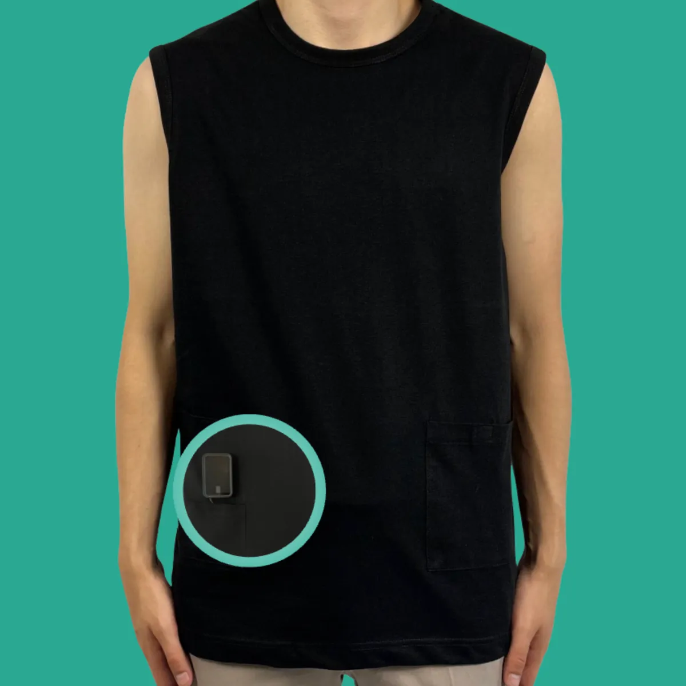

Laatst bijgewerkt: · Door het team van Diabeticswear

Opties voor je pomp in bed
- In een zakje van je nachtkleding: de pomp beweegt met je mee.
- Aan de tailleband van je pyjamabroek met de clip.
- Naast je op het matras of onder je kussen: let erop dat de slang lang genoeg is en niet strak komt te staan.
- In een speciale band om je buik of bovenbeen.
Nachtkleding met een pompzak
Een zacht katoenen t-shirt of hemd met zakjes houdt je pomp dicht bij je lichaam, zodat hij niet wegglijdt als je draait. Onze t-shirts en hemden hebben twee zakjes met klittenband en een gaatje aan de binnenkant voor de slang. Let op: de zakjes zitten aan de voorkant. Voor buikslapers kan dat minder comfortabel zijn; zij kiezen vaak voor een clip of band aan de zijkant.
Let op je slang
Draai je veel in je slaap, dan kan een lange slang om je heen gaan zitten of geknikt raken. Leid de slang onder je kleding naar de pomp en berg overtollige slang op. Merk je dat de slang 's ochtends vaak strak staat? Bespreek met je diabetesteam of een andere slanglengte past.
Je sensor 's nachts
Lig je lang op de arm of plek met je sensor, dan kan de meting tijdelijk afwijken door de druk. Krijg je 's nachts vaak een alarm dat niet lijkt te kloppen, kijk dan of het helpt om je sensor op een andere plek te dragen en bespreek dit met je zorgverlener.
Kleine tips voor een rustige nacht
- Leg je telefoon met CGM-app binnen handbereik, met het alarmvolume aan.
- Houd iets om een hypo op te vangen naast je bed.
- Controleer voor het slapen of je reservoir en batterij genoeg hebben voor de nacht.